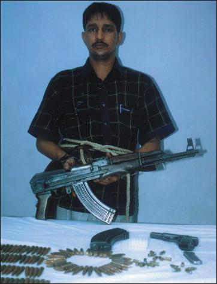

<html>

<head>
<meta http-equiv="Content-Type" content="text/html; charset=windows-1252">
<META NAME="description" CONTENT=" Mukto-mona encourages rationalism among our members.">
<META NAME="keywords" CONTENT="Rationalism, Aparthib, Avijit, Mukto-mona, Prabir Ghosh Bengali, Bangalee, Bangali,">
<title>Gopal Krishna Muhari Murder case </title>
<META NAME="description" CONTENT=" We condemn the verdict on Taslima Nasrin meted out by the court of Gopalganj, Bangladesh.">
<META NAME="keywords" CONTENT="Taslima Nasrin, Nasreen, Gopalganj, verdict, one year prison, blasphemy, Bangladesh, Islamisation, Mukto-mona">

</head>

<body background="../../mukto_thinker_wm1.jpg" bgproperties="fixed">

<blockquote>
  <p class="MsoBodyText" align="center"><font color="#000080"><b style="mso-bidi-font-weight: normal"><font size="5">&nbsp;</font></b></font></p>
  <div align="center">
    <center>
                            <TABLE ID="NavigationBar2" BORDER=0 CELLSPACING=1 WIDTH=606 height="1">
                                <TR VALIGN=TOP ALIGN=LEFT>
                                    <TD WIDTH=101 height="1" align="center">
                                    <A HREF="../../index.html"><font size="2">
                                    </font></A></TD>
                                    <TD WIDTH=101 height="1" align="center">
                                    <A HREF="../articles.html"><font size="2">
                                    </font></A></TD>
                                    <TD WIDTH=101 height="1" align="center">
                                    <A HREF="../../Recent_Debate/recent_debate.html"><font size="2">
                                    </font></A></TD>
                                    <TD WIDTH=101 height="1" align="center">
                                    <A HREF="../../Special_Event_/special_event_.html"><font size="2">
                                    </font></A></TD>
                                    <TD WIDTH=101 height="1" align="center">
                                    <A HREF="../../Moderators/moderators.html"><font size="2">
                                    </font></A></TD>
                                    <TD WIDTH=101 HEIGHT=1 align="center">
                                    <A HREF="../../Forum/forum.html"><font size="2">
                                    </font></A></TD>
                                </TR>
                                <TR VALIGN=TOP ALIGN=LEFT>
                                    <TD WIDTH=101 align="center" bgcolor="#BFD8D9" height="6">
                                      <p align="left"><font size="2" color="#FFFFFF">&nbsp;<a href="../../women/index.html"><b>Women</b></a></font></TD>
                                    <TD WIDTH=202 bgcolor="#BFD8D9" align="center" colspan="2" height="6"><font size="2" color="#FFFFFF">
                                    <a href="../../human_rights/index.html"><b>Human
                                      Rights violation</b></a></font></TD>
                                    <TD WIDTH=202 bgcolor="#BFD8D9" align="center" colspan="2" height="6"><font size="2" color="#FFFFFF">
                                    <a href="../../personalities/index.html"><b>Great
                                      Personalities&nbsp;</b></a></font></TD>
                                    <TD WIDTH=101 HEIGHT=6 align="center" bgcolor="#BFD8D9">
                                      <p align="left"><font size="2" color="#FFFFFF">&nbsp;<a href="../../humour/index.html"><b>Humor</b></a></font></TD>
                                </TR>
                            </TABLE>
    </center>
  </div>
  <div align="center">
    <table cellSpacing="0" cellPadding="0" width="600" border="0">
      <tbody>
        <tr>
          <td colSpan="2" rowSpan="3"></td>
          <td class="k" bgColor="#6fb1d9"></td>
          <td align="right" colSpan="2" rowSpan="3"></td>
        </tr>
        <tr>
          <td class="h" bgColor="#eef5fa" height="22">
            <p align="center"><b><i><font color="#000080">&quot;Gopal Krishna
            Muhari Murder case &quot;</font></i></b></p>
          </td>
        </tr>
        <tr>
          <td class="k" width="1" bgColor="#6fb1d9"></td>
        </tr>
        <tr>
          <td class="k" width="1" bgColor="#6fb1d9"></td>
          <td width="18" bgColor="white"></td>
          <td bgColor="#FFFFFF">
  <table border="1" width="48%">
  </table>
  <p class="MsoNormal" style="tab-stops: 191.25pt" align="center"><font color="#000080" size="5">Gopal
  Krishna Muhuri Murder Case: 4 accused given capital punishment 4 life
  imprisonment</font></p>
  <p class="MsoNormal" style="tab-stops: 191.25pt" align="center"><font size="4" color="#800000">-
  Ajoy Roy</font><br>
  </p>
  <h3>Justice Ensured : The Truth has been upheld<span style="FONT-SIZE: 14pt; mso-bidi-font-size: 12.0pt"><o:p>
  </o:p>
  </span></h3>
  <p class="MsoBodyText2" style="TEXT-ALIGN: justify">In a written press
  reaction issued from a hideout address Mrs. Uma Muhuri, wife of the deceased
  principal of Nazirhat college expressed that the trial of assassination of her
  husband leading to identification of the real culprits and punishment is
  praiseworthy step on the part of our judiciary system. But this is just a good
  beginning towards establishing a true rule of law. She also hoped that the
  higher courts would uphold the verdict given by the special tribunal (the
  speedy trial tribunal). Mrs. Muhuri asked the government pursue the case of
  the acquitted ones at the HC appellate division for justice.</p>
  <p class="MsoBodyText2" style="TEXT-ALIGN: justify"><o:p>
  </o:p>
  </p>
  <p class="MsoBodyText2" style="TEXT-ALIGN: justify">As the verdict was heard
  the pressmen ran towards the residence of Principal Muhuri, Shawan Bhaban at
  Jamal Khan Road to get reactions from his wife and other inmates. But none was
  available there except a distant relative who did not disclose their
  whereabouts, obviously for security reason. The police constable on duty at
  the gate informed the press that the family shifted from the house a couple of
  days back.</p>
  <p class="MsoBodyText2" style="TEXT-ALIGN: justify"><o:p>
  </o:p>
  </p>
  <p class="MsoBodyText2" style="TEXT-ALIGN: justify">The press however could
  get in touch of the family over a cellular phone. Saikat, son of Principal
  Muhuri stated in his initial reaction that the lower court has done its job.
  It had identified the killers and gave punishment. Truth has surfaced to the
  light. He however declined to make any comment if the judgment has satisfied
  the sentiments of the family.</p>
  <p class="MsoBodyText2" style="TEXT-ALIGN: justify"><o:p>
  </o:p>
  </p>
  <p class="MsoBodyText2" style="TEXT-ALIGN: justify"><u><span style="FONT-SIZE: 16pt; mso-bidi-font-size: 12.0pt">Detail
  of the verdict: Who got punishment ? <o:p>
  </o:p>
  </span></u></p>
  <p class="MsoBodyText2" style="TEXT-ALIGN: justify">The verdict was announced
  at 12-15 on 6<sup>th</sup> February, 2003 as the judge entered the court room
  and took his seat.</p>
  <p class="MsoBodyText2" style="TEXT-ALIGN: justify">In a crowded court
  premises thousands of people with relatives of the accused heard the judgment
  pronounced by the judge Mr. M. Hasan Imam of the Speedy Trial Tribunal dealing
  with the major portion of the verdict of the most sensational murder case in
  the history of the criminal procedures in Bangladesh. The read out formality
  lasted only 3-4 minutes in which the learned judge was heard to announce that
  out of 12 accused 4 were to be hanged to death and 4 were to spend ?rest of
  their life? in rigorous imprisonment. The rest were set free, as the case
  against them could not be established beyond doubt in the eye of the court.</p>
  <p class="MsoBodyText2" style="TEXT-ALIGN: justify">All eight found guilty of
  involving in the murder case are members of armed cadres of Jamat i Islami
  belonging to Islami Chhatra Shibir. The culprits who got capital punishment
  are (1) Alamgir Kabir alias Baitya (dwarf) Alamgir, (2) Taslimuddin Montu, 93)
  Gittu Nasir, and (4) Azam. The later two accused are still absconding, while
  Baitya and Montu wee present at the dock when the learned judge declared the
  punishment ?to hang them till<span style="mso-spacerun: yes"> </span>death?,
  after 15 months of committing a most heinous crime.</p>
  <p class="MsoNormal" style="tab-stops: 191.25pt" align="center"></p>
  <blockquote>
    <blockquote>
      <blockquote>
  <p class="MsoNormal" style="tab-stops: 191.25pt" align="center">&nbsp;<b>Taslimuddin
  alias Montu</b>, accused in the Gopal Krishna Muhuri murder case, arrested
  with an AK-56 rifle at the DC Road at Chittagong last year<o:p>
  &nbsp;
  </p>
      </blockquote>
    </blockquote>
  </blockquote>
  <p class="MsoBodyText2" style="TEXT-ALIGN: justify">&nbsp;</p>
  <p class="MsoBodyText2" style="TEXT-ALIGN: justify">The accused who got
  rigorous imprisonment for life plus a fine of Tk 50,000/- each are (1)
  Mohammad Shajahan, accountant of Nazirhat College, (2) Saiful Islam alias
  Chhotto Saiful, also a shibir cadre, (3) Habib Khan, and (4) Mahiuddin alias
  Mahinuddin. The later two, both members of the armed cadre of Islami Chhatra
  Shibir are absconding.</p>
  <p class="MsoBodyText2" style="TEXT-ALIGN: justify">The court further observed
  that the punishment of Gittu Nasir, Azam, Habib Khan and Mahiuddin would be
  effective from the date of their arrest or surrender. The court instructed the
  concerned executives to make sure of arresting the absconders and handed over
  the copy of judgment to CMP (Chittagong Metropolitan Police) Commissioner and
  District Magistrate. The court also instructed that that necessary procedure
  of giving authority to the district commissioner be given so that after the
  expiry of period of filing appeal realizing the fine. The court also set the
  procedure of realizing fine by confiscating the wealth of the punished.</p>
  <p class="MsoBodyText2" style="TEXT-ALIGN: justify">The accused receiving
  capital punishment may appeal to higher court within seven days after getting
  the certified copy of the verdict.</p>
  <p class="MsoBodyText2" style="TEXT-ALIGN: justify">Those who were acquitted
  by the court are Nasir, a prominent shibir activist and brother of Mohiuddin,
  who was believed to be the mastermind of making the plan of killing Muhuri.
  three college professors of Nazirhat college- namely messers Tofazzal Ahmed,
  Idris Mian Chodhury and Md. Jaharul Haque</p>
  <p class="MsoBodyText2" style="TEXT-ALIGN: justify">The case was conducted by
  PP Ahmad Kamrul Islam with assistance from Advocate Shadhanmoy Bhattacharyya.
  On behalf of the defendants a team of lawyers including advocate Badiul Alam,
  Ahsanul Haq Hena, Manjurul Islam Ansari and others.</p>
  <p class="MsoBodyText2" style="TEXT-ALIGN: justify"><u><span style="FONT-SIZE: 16pt; mso-bidi-font-size: 12.0pt">Motive
  behind the murder<o:p>
  </o:p>
  </span></u></p>
  <p class="MsoBodyText2" style="TEXT-ALIGN: justify">The court in its judgment
  tried to reveal the motive of the case. Principal Muhuri was an able
  administrator but also a popular teacher, an educationist and an organizer of
  our war of liberation in Chittagong. He was gunned down on November 16, at his
  residence early in the morning by a group of allegedly students of his college
  belonging to armed cadre of Islami Chhatra Shibir, a student wing of the
  Islamic Fundamentalist political party known as Jamat i Islami. An AK rifle
  with two rounds of bullets blew out his head. The killing of a well respected
  teacher and a freedom fighter was sequel to a move by a vested quarter for his
  removal.</p>
  <p class="MsoBodyText2" style="TEXT-ALIGN: justify">The judgment observed how
  the plan was masterminded and skillfully executed. The court noted that there
  were civil suits against Principal Muhuri filed by three college teachers and
  some other. The judgment said that a few days before the killing a secret
  meeting took place atop a hill within the campus of the Chittagong university
  in which the accused of the case took part including Gittu Nasir, Chhoto
  Saiful, Azam and Baitya Alamgir. It was planned to eliminate Principal Muhuri.
  Just a day before the killing, as per plan, these four assembled at the
  residence of Taslimuddin Montu at Kapashgola at 10 a.m. to examine the
  effectiveness of an AK5 rifle, a pistol and two revolvers and loaded with
  bullets. The team finalized the scheme for execution on the following morning.</p>
  <p class="MsoBodyText2" style="TEXT-ALIGN: justify">On the fateful day these
  five cadres Mantu, Azam, Gittu and Baitya of Shibir armed with those deadly
  weapons came to the residence of Principal Gopal K Muhuri early in the morning
  with an auto rickshaw. While Chhota Saiful was waiting at the entrance of the
  lane in the three-wheeler, other four proceeded toward the residence of the
  principal. Three of them namely Gittu, Azam and Baitya entered the residence
  upstairs keeping Montu armed with a pistol on guard at the gate of the house.
  On entering the upstairs flat Gittu asked Mrs. Uma Muhuri, wife of the
  deceased principal ?Where is our sir ?? Within a few minutes Mr. Muhuri
  appeared at the door and sat on a sofa asking who they were. Immediately,
  Gittu Nasir twice shot at touching his AK5 rifle that blew off his skull. The
  unfortunate Principal instantly died- the verdict said.</p>
  <p class="MsoBodyText2" style="TEXT-ALIGN: justify">But the real motive of the
  killing still remained uncovered. Is it because of shear professional jealousy
  on the part of a few college teachers to become principal of that college or
  was there any communal cum political motive or the killing was just a n act of
  lunticism on the part of a few fundamentalist shibir cadres ?</p>
  <p class="MsoBodyText2" style="TEXT-ALIGN: justify">But one thing is in common
  the killers and their associates belong to a student front of an Islamic
  Fundamentalist Party and those accused teachers and the convicted accountant
  believe in the philosophy of that particular party. What conclusion should we
  draw ? If this is simply an act of terrorism then why the principal was their
  target ? If they had come for grabbing wealth or money, which the poor
  Principal neither had, they could have easily took away with out shooting a
  single shot. Was it then because Principal bore a Hindu name and because he
  was a freedom fighter believing in conscience of war of liberation and
  secularism- both opposed Jamat Philosophy ?</p>
  <p class="MsoBodyText2" style="TEXT-ALIGN: justify"><u><span style="FONT-SIZE: 16pt; mso-bidi-font-size: 12.0pt">A
  note of concern</span></u><span style="FONT-SIZE: 16pt; mso-bidi-font-size: 12.0pt"><o:p>
  </o:p>
  </span></p>
  <div align="justify">
    <span style="FONT-SIZE: 16pt; FONT-FAMILY: 'Times New Roman'; mso-bidi-font-size: 12.0pt; mso-fareast-font-family: 'Times New Roman'; mso-ansi-language: EN-US; mso-fareast-language: EN-US; mso-bidi-language: AR-SA"><font size="3">Yes,
    we are very much concerned about the safety of the Muhuri family, especially
    after the pronouncement of the judgment. As we know the nature of those
    fundamentalists, for shear revenge these dedicated &quot;soldiers of
    Islam&quot; can go to any length to eliminate the Muhuri family. It is the
    responsibility of our judiciary</font> <font size="3">system and the
    government of Bangladesh to save the life and dignity of the family</font>.</span>
  </div>
  <div align="justify">
    &nbsp;
  </div>
  <div align="justify">
    <p align="center"><a href="http://groups.yahoo.com/group/mukto-mona/message/9648">My
    Teacher Muhuri's verdict</a> by <b>Ranjan Chowdhury</b>
  </div>
  <p class="MsoNormal" style="tab-stops: 191.25pt" align="left"><b><a href="muhuri_verdict.htm">Go to
  part 1</a></b><span lang="EN-US"> </o:p>
  </span>
  </p>
          </td>
          <td width="14" bgColor="white"></td>
          <td class="k" width="1" bgColor="#6fb1d9"></td>
        </tr>
        <tr>
          <td vAlign="top" align="left" colSpan="2" rowSpan="2"></td>
          <td bgColor="white"></td>
          <td vAlign="top" align="right" colSpan="2" rowSpan="2"></td>
        </tr>
        <tr>
          <td class="k" bgColor="#6fb1d9"></td>
        </tr>
      </tbody>
    </table>
  </div>
</blockquote>

<p class="MsoNormal" align="center"><b><font color="#800000">&nbsp;Pages:&nbsp;</font>&nbsp;
<font color="#ff0000"><a href="muhuri_verdict.htm">1</a></font>&nbsp; <font color="#ff0000">2&nbsp;</font></b></p>

<p class="MsoNormal" align="center">[<A HREF="../../index.html">Mukto-mona</A>]  [<A HREF="../articles.html">Articles</A>]  [<A HREF="../../Recent_Debate/recent_debate.html">Recent&nbsp;Debate</A>]  [<A HREF="../../Special_Event_/special_event_.html">Special&nbsp;Event&nbsp;</A>]
                              [<A HREF="../../Moderators/moderators.html">Moderators</A>]  [<A HREF="../../Forum/forum.html">Forum</A>]</p>

</body>

</html>
